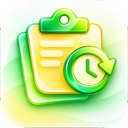

No Clipboard History
Things you copy will show up here.Launch Clyp automatically when you sign in
Items to keep. Pinned items are always kept.
Skip text, rich text and images larger than this
Record what you copy
Run from the menu bar only
Show a Toggle Developer Tools item in the tray menu
Save plain text
Save formatted text and HTML copied without a plain-text version
Save images
Save file path references
System follows your operating system and switches automatically.
Remove old items automatically
How long to keep history items
Pinned items are normally kept when history is cleared
Remove everything from clipboard history.
Global shortcut. Click the field, then press the keys. Esc cancels.
Clyp
Fast, Private, Cross-Platform Clipboard Manager
Version
© 2026 Clyp